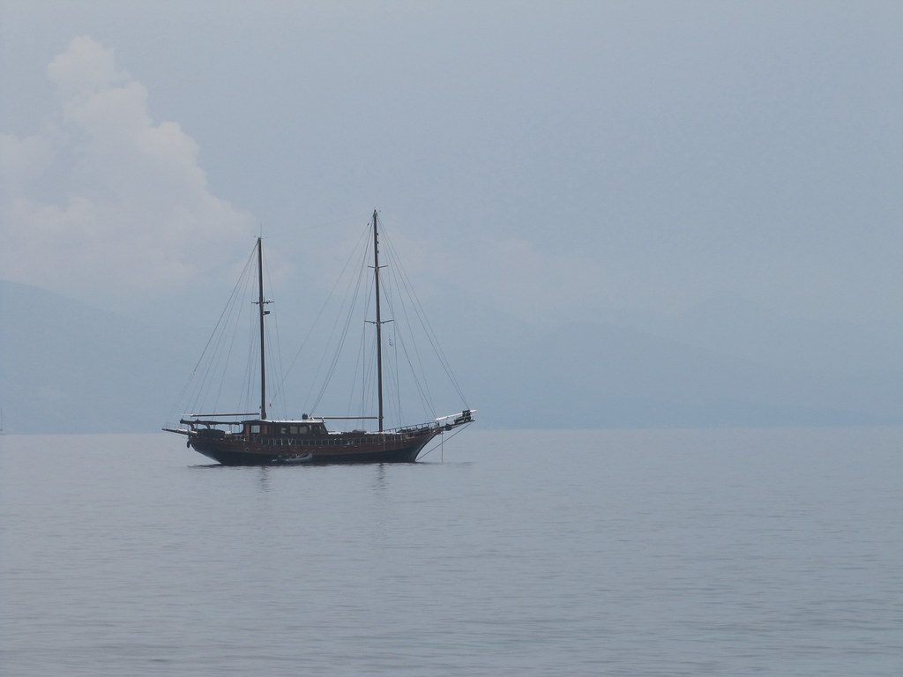
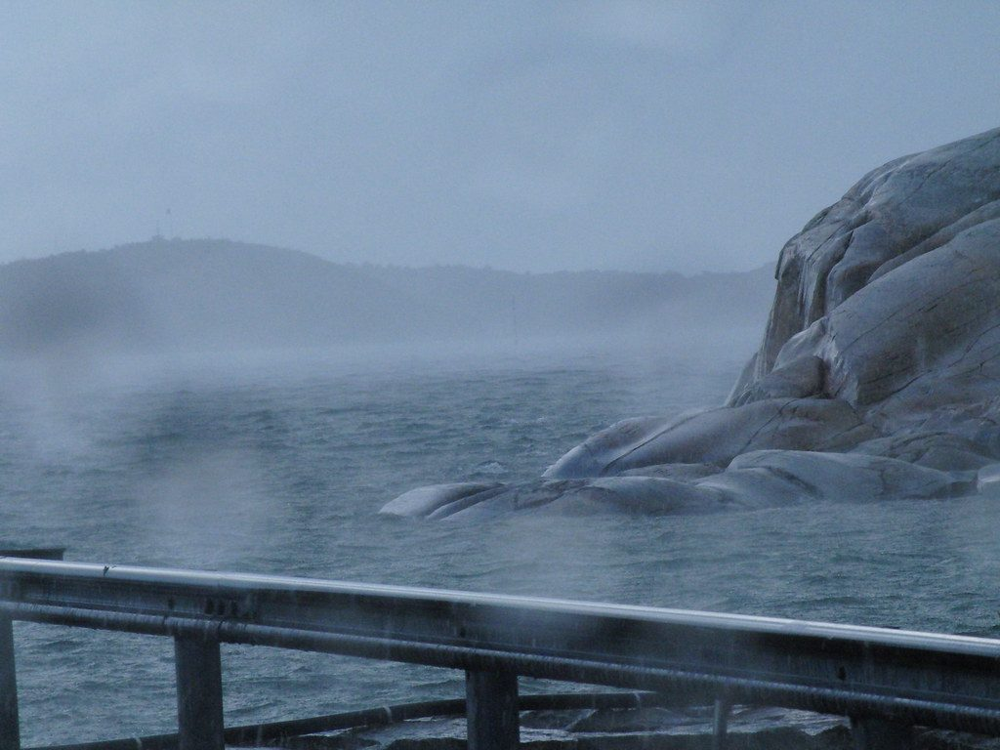
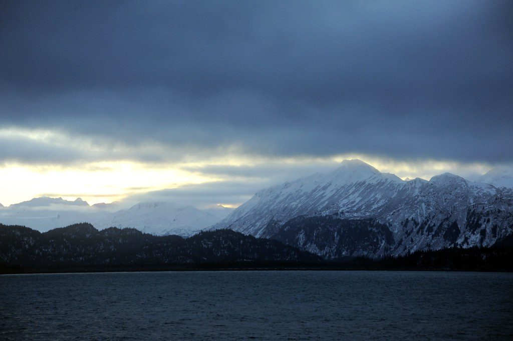
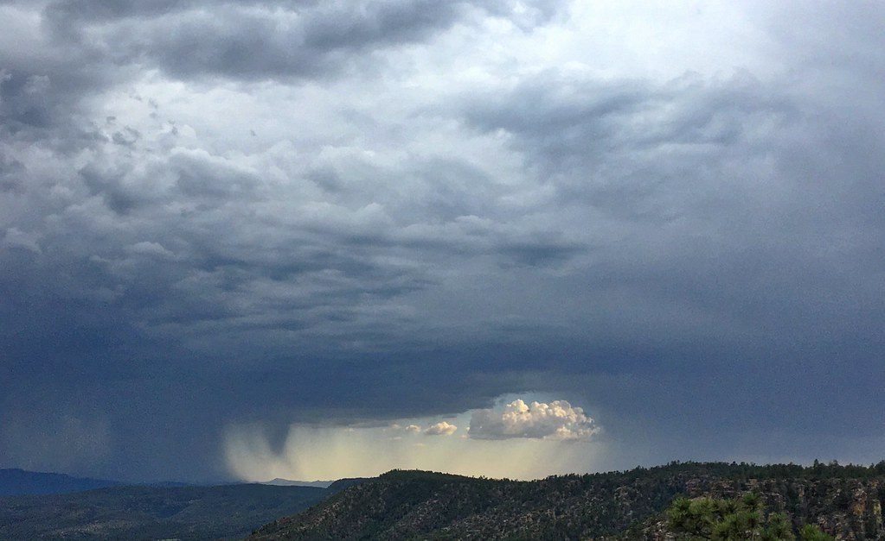
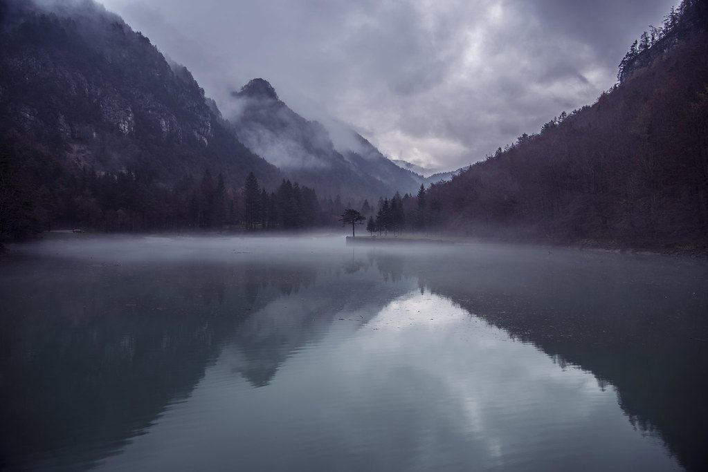
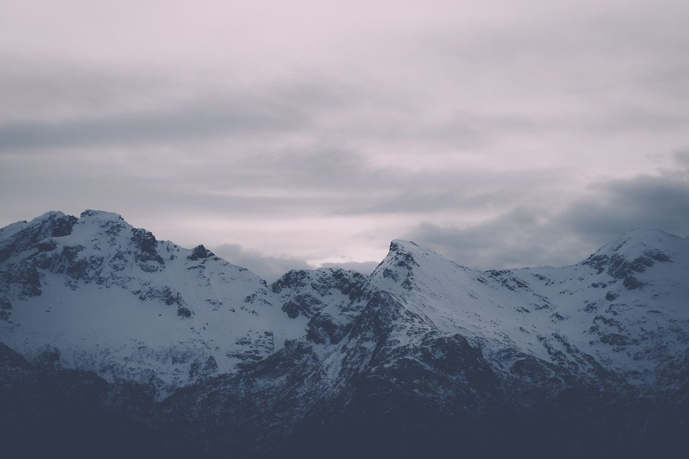

Bildquellen
Alle Fotos auf dieser Seite sind gemeinfrei: CC0 1.0 (Public Domain Dedication) oder als Public Domain markiert (PDM). Gefunden über Openverse, unverändert übernommen. Eine Nennung ist bei CC0 nicht vorgeschrieben, wir nennen die Urheber trotzdem.
Wetterdaten: Open-Meteo.com, Lizenz CC BY 4.0.
| Bild | Titel | Urheber | Lizenz | Quelle | Variante |
|---|---|---|---|---|---|
 | 20150527_123557LC | Luc Coekaerts from Tessenderlo | CC0 | Originalquelle | A |
 | Gothenburg washdown | mnsc | CC0 | Originalquelle | A |
 | Deep blues and gray whites of the Kenai Pennisula Mountain Range, winter, over Katchemak Bay, off Homer Spit, Homer, Alaska, USA | Wonderlane | CC0 | Originalquelle | A |
 | Rain Window | cogdogblog | CC0 | Originalquelle | A |
 | Calm Water on Lake in Valley | Image Catalog | CC0 | Originalquelle | A |
 | Snow Covered Mountain Peaks | Image Catalog | CC0 | Originalquelle | A |
Studienprojekt der Kunstschule Wandsbek, keine offizielle Seite.